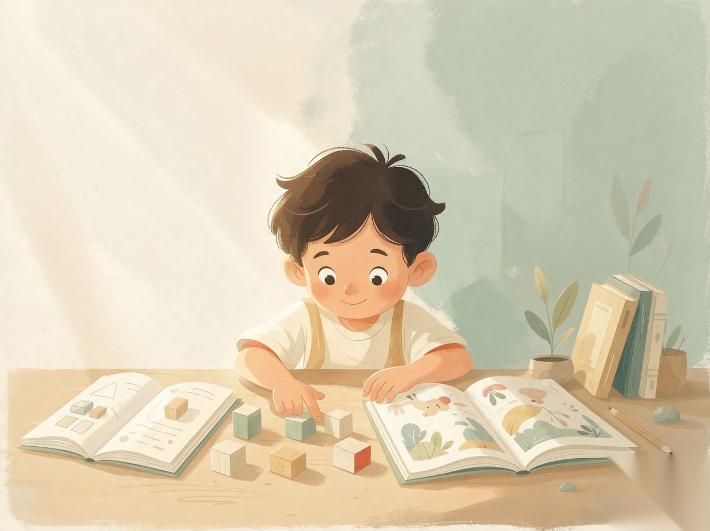

知某数，识某文
上一课我们学到学习的次序：先修好孝悌这份仁心，再去拓宽见闻。这一句，就讲见闻从哪里起步。
先要懂得数理，再读懂文字典籍。
「数」，一开始就是数数、计算，分辨多少、长短、先后。顺着数往深走，是时序、节律、万物的秩序。我们看四季轮回、日月交替，里面都藏着「数」的条理。
「文」，是古人写下的文字、故事、道理。文字把前人的经验、善心、智慧保存下来，我们透过读书，跨越时间，和古人心意相通。

这里要记住：数和文，都只是工具。
学算数，不是只为算对题目；学文字，也不只是认识汉字。
工具的意义，是帮我们看懂世界、理清思路，更好地去践行孝悌、体谅他人。
本心若是不稳，就算精通算术、饱读文章，学问也容易变成向外夸耀的资本。

德行为本，学识为用，二者搭配，才是完整的成长。
会算数、识字多，但冷漠自私；把读书计算当成攀比分数的竞赛。
心怀体恤，再借数理文字明理广见；以学问开阔心胸，安顿自己、善待他人。
- 向外求知，最先有两门根基：数理次序，文字典籍。
- 数，教会我们分清条理；文，传递前人的善意与智慧。
- 文字、算术都是工具，工具的价值，要看使用它的那颗心。
- 德行为本，学识为用，二者搭配，才是完整的成长。
「知数识文」最容易被压成刷题与打卡。三条提示，护住兴趣与本心。
一、不要简化成刷题、识字打卡。数是感知秩序，文是领会情理；兴趣优先，不唯速度、不唯数量。
二、承接本末次序。先护好孩子共情体恤的心，再陪伴他探索数理、阅读文字；不要反过来，以学业成绩压倒品格养育。
三、承接教与学的二分。家长营造安定的阅读、探索环境，是施教一侧；孩子生出好奇、愿意领会数理与文字，属自主修习。
接上选择力练习：仁心底色不变，孩子可以按自己的节奏与喜好探索数字与文字，不必统一进度。
知某数，识某文
一 · 字义与句读数，算术，古六艺之「数」；文，文字、文典。全句：在广见博闻的阶段，先要通晓数理次序，读懂典籍文字。
承接「首孝悌，次见闻」，是见闻一层的落地分科：人伦之本确立，而后开启智识基础的修习。
二 · 命题考辨勘误重点：很多人理解成一份启蒙识字算数的早教清单。
放在儒家六艺体系里看，「数」不只是计算，是万物的秩序、节律、分寸；「文」不只是认字，是载道的文本。
孝悌主仁，是价值根基；数主条理，文主传承。仁为本，理与文为两翼。
这一句承接《论语》「行有余力，则以学文」：「学文」的起点就是识文，搭配知数，理、文并举。
三 · 中西对照六艺：礼、乐、射、御、书、数。书、数正是启蒙基础，与本句一一对应。
现代认知科学：逻辑数理与语言文字，是人类两大基础符号认知系统，是一切高阶学习的底座。
人文传统：语言承载价值叙事，数理提供客观秩序，二者不可偏废。
反向思辨：符号与知识体系本身中立，脱离德性根基，精密的数理、广博的文辞都可以用来谋私、巧饰。
四 · 与前后课的张力次第收拢一段：首孝悌（立心之本）→ 次见闻（向外求知）→ 知某数，识某文（求知的入门根基）。
呼应第十三课「人不学，不知义」：义藏在人伦，也藏在事理与文脉之中；知数，明事理分寸；识文，见古人心义。
呼应第十二课「玉不琢，不成器」：孝悌磨出玉之质地，数与文雕琢器物纹理，让璞玉可发挥功用。
呼应第四课「教之道，贵以专」：稳定持续的启蒙，让心性与智识同步生长，不偏一端。
一、有人不擅数理却深通人文，有人逻辑极强而不喜文字，算不算偏离这个次第？
二、现代信息泛滥，文字典籍良莠不齐，「识某文」如何分辨，避免被杂说误导？
三、数的尽头是规律，文的尽头是价值，二者之间如何相通？